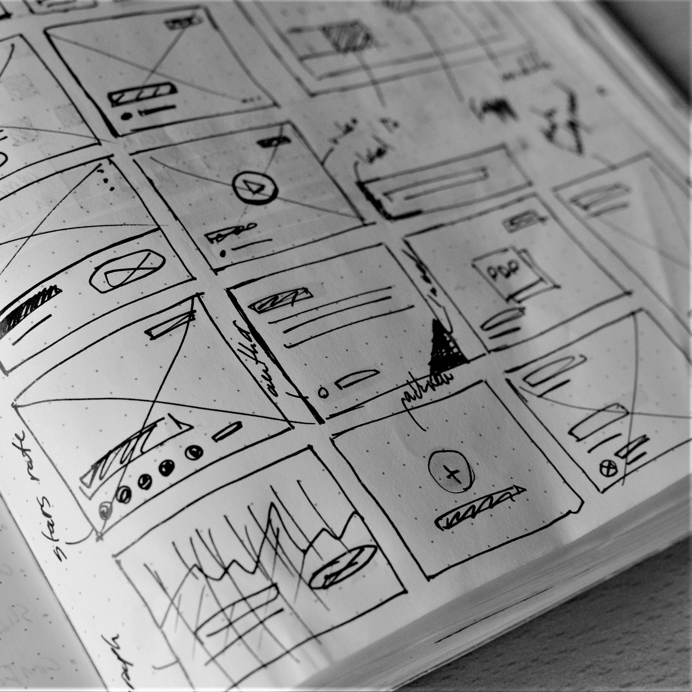

Teknologiene Git har gjort tilgjengelig er nærmest uvurdelige for en som koder, om det så er alene, på flere PC-er samtidig eller sammen med en gruppe andre utviklere. I denne artikkelen vil vi se litt nærmere på Git og ett av de mange nettstedene som tilbyr en tjeneste rundt dette - GitHub.
Les mer
Hva er forskjellene mellom media typer og hvordan brukes disse? Skulle du printet ut en nettside, ønsker du da å få med alle knapper? Vi ser litt nærmere på hvordan man få dette til å fungere.
Les mer
Det finnes flere måter å lage CSS layout på, men den mest aktuelle er kanskje Grid - men hva er det? Og hvilke andre metoder finnes?
Les mer

Her kan du se et bilde av hvordan jeg først tenkte at dette nettstedet skulle se ut.
Les mer